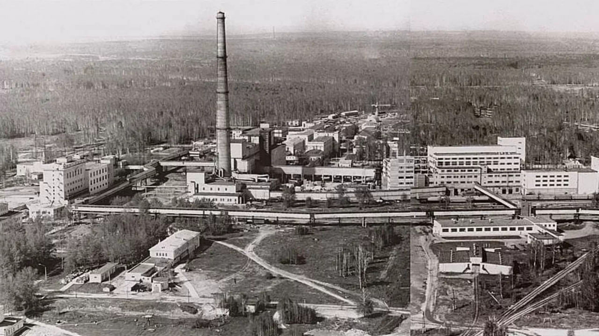
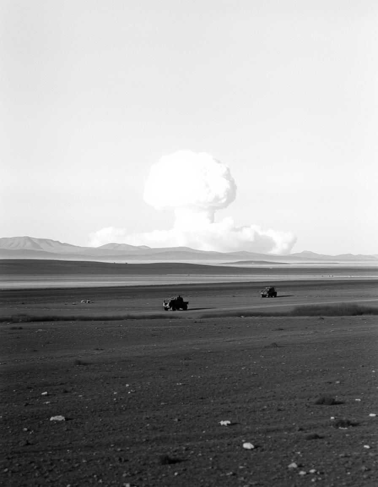

Ядерный щит Урала: Сохраняя историю атомного проекта
Наш сайт — это образовательный и информационный ресурс, посвященный ключевой роли Урала в создании ядерного щита России. Здесь вы найдете структурированные данные, редкие архивные материалы и интерактивные экспозиции, помогающие сохранить историческую память об одном из важнейших проектов XX века.


Задачи нашего сайта
Сайт служит источником информации одного из важнейших проектов XX века. На сайте предоставлено много информации к легкому изучению. Мы хотим сохранить память о Урале и великом атомном проекте.